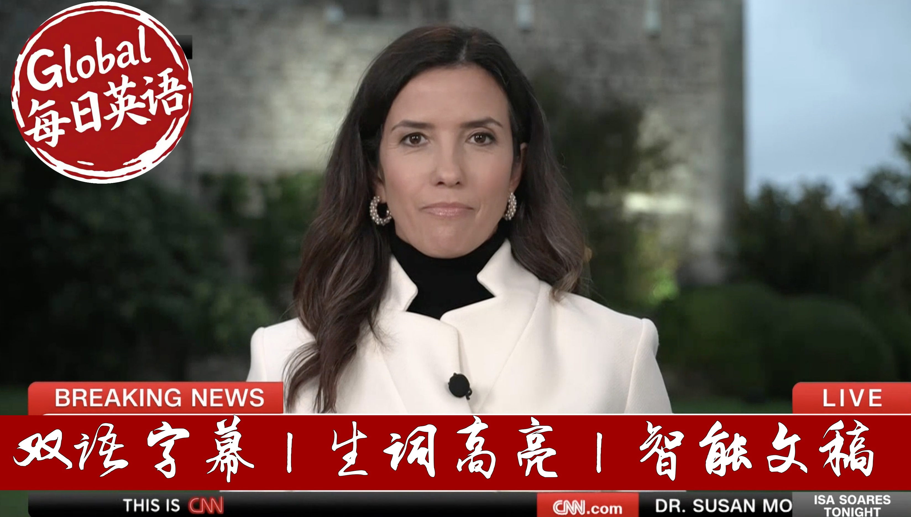

【CNN News 20250918 美联储宣布降息25个基点｜英国王室高规格接待特朗普|俄反对派领袖纳瓦尔尼遗孀出示国际实验室证据，证实其夫系中毒身亡】
Summary: The U.S. Federal Reserve announced a 25-basis-point rate cut amid a slowing labor market and trade tensions. Newly confirmed Fed governor Stephen Mirren, appointed by Trump, voted against the decision, advocating for a 50-point cut. The meeting highlighted growing political influence on the Fed. Meanwhile, President Trump’s state visit to the UK featured lavish royal welcomes at Windsor Castle, while thousands protested in London against his policies. Prime Minister Keir Starmer seeks to leverage the visit for economic gains despite domestic controversies.
摘要： 美联储宣布降息25个基点以应对劳动力市场疲软和贸易压力。特朗普新任命的联储理事史蒂芬·米伦却投票反对，主张更大幅降息，暴露货币政策政治化风险。与此同时，特朗普对英国进行国事访问，温莎城堡举行盛大皇家欢迎仪式，但伦敦爆发大规模抗议活动。英国首相斯塔默试图通过此访提振国内经济，却深陷政治丑闻困扰。

⏱️ Estimated Reading Time: 44 min.
📚 四级生词 📚 六级生词 📚 雅思生词 📚 托福生词 📚 专八生词 📚 SAT生词 📚 考研生词 📚 GRE生词
Hello, and a very warm welcome, everyone.
I'm Eza Swaras, coming to you live from Windsor for President Donald Trump's second state visit.
But tonight we do bring in the hour with breaking news.
The US Federal Reserve announcing its latest interest rate decision as the country faces a slowing labour market and President Trump's expansive tariffs.
I want to go straight to our rich request to help us break down the numbers and Richard, do we have a sense of what that decision is?
Markets pricing in 25 basis points here.
And that's exactly what they got.
It's just been announced from the Fed that interest rates will be cut by a quarter basis, a quarter point, 25 basis points.
I'm going to lean over to the left.
Well, I grabbed the statement, which is just printing over here, because the interesting thing is also not only what they voted for, how they voted and what all members did.
Now, here we go.
Voting for monetary policy was most of them.
Ah, there it is.
There it is.
Right at the bottom.
This is the important.
This is the interesting.
Not so much important, but interesting bit.
Voting against this action was Stephen Mirren, who preferred to cut the rate by 50 basis point, half a percentage point.
That is interesting, because Stephen Mirren is Donald Trump's pick to take one of the vacant seats, full of vacant seats, and he was only confirmed yesterday.
The vote to confirm him happened late last night.
So not only has Donald Trump got his person onto the Fed board, that man voted for a twice larger rate cut than the rest of the board.
One other thing to note, Lisa Koch, she is the Fed governor that Donald Trump is trying to sack, who a court ruled could sit today, and yesterday she voted for the 25 basis points.
So that catches amongst the pigeons here.
Yeah, I mean, interesting that Stephen Mirren, the newly confirmed governor, has the way he's asked people to 50 basis points.
And this has been described, Richard, as one of the most politically charged decisions and unprecedented meeting.
Do you have a sense in terms of if you looked at the dot plot, what the guidance is, and of course we'll hear from Jay Power a bit later in about 25 minutes also.
Do we have a sense of how others voted?
I know you're still trawling for all the papers.
From your lips to my producers ears, we're just printing the dot plot even as we speak, because that comes with other notes to it.
I think, look, the politicization of the Fed is now well and truly underway.
The fact that Mirren couldn't go even just to not so he didn't scare the horses.
He couldn't go for 25 basis points.
And the reason I say this is because the other two candidates, or sorry, the other two governors who did Christopher Waller and Michelle Bowen, they both went for 25 last time and they went for 25 this time.
In other words, they're going with the majority.
It is Stephen Mirren, who is just basically sticking two fingers up at the rest of them, saying, I mean, we can only interpret this as being my form of boss, if you will.
I was head of Chief Economic Advisor.
He wants 50 basis points.
He's put me here.
I think there should be 50 basis points.
I'm just going to, here we go.
I've got a whole load of the dot plot coming here now.
I'll get to it in a second when we have a look at it.
This is very dangerous.
We're just looking at what you look for that.
We're just to ask Kate, can you bring up the Dow Jones as well, very much priced in?
Of course, we're here from Jay Powell.
And I think we'll get a better sense, Richard.
I think a lot of people will be listening to what exactly how he frames this, the words he used, the language in terms of what we likely to see in the next meetings.
This is going to be crucial here.
Yes, I mean, he's going to have to explain the explanation of the quarter point is really quite straightforward.
He's made it clear there is a balance of risks when you have your two sides of your mandate, full employment and inflation and they are in conflict, you balance which is the most important at the moment.
And clearly, unemployment is more important or the employment picture is more serious at the moment.
But he's going to have to answer questions about the fact.
He now has a Fed governor in Stephen Marin, who's clearly there to do the president's business.
Whatever you say, there is that, you know, Waller and Bowman didn't go for 50 basis points.
They were the, if you will, the stalwarts for a rate cut.
So now you're going to have the question, if you get rid of Lisa Cook and you get rid of Powell next year when his terms up, you end up with a majority which you can then finagle elsewhere.
Looking at the dot plot, Josh is also looking at it and we'll be telling you if he sees anything particularly interesting in the dot plots.
The way I see it at the moment, rates are coming down.
If we take a closer look at the dot plot, we'll have it for you later.
But rates are coming down and they're going to probably come down faster than the market would otherwise.
I mean, the market's up because of that, by the way.
But they're going to come down faster than I suspect Jerome Powell would like.
And that's because there is this shift of balance within the Fed now and that majority.
It's unique for us to have heard the president of the United States as we did with Donald Trump talk about we will have a majority.
You don't have a majority on the Fed.
They basically vote as they see fit.
Yeah, and they're fed as you and I've been discussing it, been facing unprecedented attacks to its independence, Richard.
I know you'll stay across this, of course, we'll bring this.
Have you got it there?
Of course, we'll be across the latest numbers.
We'll be also be listening into Jerome Powell who speaks in less than what, 24 minutes time.
And I think the questions are probably the most interesting part of that and some sense of guidance, I think, will be crucial.
Richard Quest, as always, thank you very much.
Appreciate it.
Welcome back, everyone, to Windsor.
This is where we have been looking at the pomp, the pageantry and protest when I leave the financial markets for just a moment.
Because all eyes have been on US President Donald Trump's historic second state visit to the UK.
And what a lavish welcome he has received.
And it began with the President and the First Lady, were greeted by the Prince and the princes of Wales ahead of a private meeting.
A royal sauce described it as a war and friendly.
Later, the Trumps took a carriage ride with King Charles around the grounds of Windsor Castle.
They were also treated to a flyover by the Red Arrows, the British Air Force's arybatic team, of course.
Next hour, the President and the King are expected to speak during a state banquet.
And while the royal family was rolling out the Red carpet for the President, anti-Trump protesters were out in full force, miles away in central London, about 25 miles also from where we are.
Some came dressed, and as other world leaders, such as Russian President Vladimir Putin, you can see holding a sign that Red wore criminals for Trump.
And Israeli Prime Minister Benjamin Netanyahu, bearing a sign that Red murderers for Trump.
CNN's Elena Trins joins us now.
And Elena, we are seeing very clear divide, right?
See, in the protests here, the pomp on the sign and the winters.
But I'm guessing a lot of these protests, President Trump, on me seeing them, Elena.
No, and I think that's by design.
Yes, I mean, he's not spending any time really in the heart of London apart from his, you know, overnight stay last night, but he immediately traveled here.
He'll be staying at Windsor this evening after that state banquet, tomorrow heading directly to checkers, and then departing back for Washington.
So not a lot of time in London, kind of, you know, to the benefit, I think, of the UK, the Prime Minister, of course, and the royal family.
He is not spending any time at, you know, I've been to Mr. Abbey, or any time inside of Becklingham, Palace, because it's going under renovations.
And so he is being a little bit insulated from this.
It's actually similar, kind of lucky as well, that last night here in Windsor, there were political, you know, protesters and activists who were putting images, displaying images of the President and Jeffrey Epstein on the castle walls for them were arrested.
But really, he is insulated from all of this, the only really time he could see some of this would be on social media.
So far, we really haven't seen any kind of reaction from the President to any of that, very unlike what we saw back in 2019 for that first state visit when he was, you know, criticizing and noting a lot of it on social media.
We haven't seen that yet, but of course, perhaps after that state banquet, we know the President and L.A.S. I do, like to stay up late at night, you know, sending those truth social posts.
So we could still see that.
But look, I do think by large, this has really been a lot of time with the Royals.
I've actually been kind of struck, Isa, by how much time President Donald Trump has spent in one-on-one conversation behind closed doors with King Charles.
And of course, you know, at a moment like this, as much as President Donald Trump has great respect for King Charles, I know just a couple of days ago he remarked on how he believes they have a great relationship, how he's a great king.
They have very different politics.
And, you know, we're curious to see whether or not perhaps the king is bringing up some of the things that are priorities for him.
One, of course, which is having more aid be sent to Ukraine to try and counter Russian aggression.
And then also, of course, climate change among other things.
Their politics are very different, not sure if it's come up in any of those conversations and the Royals, of course, try to keep those under wraps.
But we will be pressing for more on that.
And then the state banquet is really supposed to be kind of the cherry on top of this, this padrantry that we've seen all day.
That is what I know.
Many of the people who are accompanying the President to this state visit.
It's not just, of course, the first lady, but also some of his top advisors, like the Treasury Secretary, like the Secretary of State.
His foreign envoy, Steve Wyckoff, all of them going with the President and attending that banquet tonight as well.
So a lot to still be watching for and a lot that I know a lot of people are still excited about as we get closer to that banquet this evening.
Yeah, and we'll get that in the next round.
We'll get a sense as well.
Who's attending?
And what they'll be eating.
I'm wearing.
I know how many people love to know those details.
Elaine Treen has always appreciated.
Thanks, Elaine.
I could see you.
And beyond all of the fanfare, there's the business of the visit.
Top US tech and AI firms are pledging to invest billions of dollars in data centers, computer chips and AI infrastructure in Britain.
It's been called the tech prosperity deal.
And that agreement will no doubt be a topic of conversation on Thursday.
And when Mr. Trump meets with British Prime Minister Keir Starmer, also likely to be on the agenda how to get Russia to negotiating table.
So, Elaine Treen was mentioning there an effort of course to bring an end to the war on Ukraine.
Freddie Gray is a deputy editor and US editor of the spectators, also the host of the podcast and Maricano.
Freddie, good to see you.
Give us a sense then of what Prime Minister Starmer is hoping to get out of the state visit.
What realistic deliverables here are we likely to see.
If any.
Well, it's worth noting that Keir Starmer has had a terrible few weeks.
Not so long ago, he announced or phase two of his government.
And everybody was a bit surprised by that because nobody knew what phase one had been.
And ever since he's made that announcement, he's had a series of disasters.
And he's been a deputy prime minister, Angela Raymore resigned.
He lost his ambassador to the US, Peter Mendelssohn, who of course was instrumental in organizing the Donald Trump trip, which instrumental pushing for all this pageantry and so on.
And he's also he's had other crises and the British economy is in trouble.
And he is stalling on any number of fronts.
He's hoping that this trip changes up the new cycle and is just a sort of positive news week for Britain.
And it'll be very happy.
I think with the headlines today because Trump is not only.
No, go ahead.
I was going to say, Hi, you'll be happy with the headlines today, but clearly not seeing the protests ready.
Yeah, no, you mean Starmer or Trump.
Being Trump being shielded from the protests and Starmer perhaps not too happy with some of the footage that was plastered on Wednesday castle.
Yes, I'm sure that I mean, they have been protest.
I don't think that tremendously significant.
The police estimate about 5000 protestors go to Central London.
And I mean, when you think of the weekend, there was a very hard right rally in Britain in Central London that had half a million people.
According to some estimates.
I don't think those protests are particularly significant.
I think so far it's gone fine.
I think where where it will get interesting is tonight at the state and quit Donald Trump on the speech.
Will there be some political content in there?
And then tomorrow when we get into the trade deal with between Britain and America, will there be wrinkles in it?
Will there be problems?
We are certainly hoping that this tech investment, this tech prosperity deal in Britain brings billions of investment into the.
That would be great.
But some it has also the back the downside to an actual lot of people are concerned about that the US tech takeover of the British economy.
So that will be another potential point of attention.
Yeah, 42 billion dollar deal being announced.
We know Freddie what they want to see or talk about potentially tomorrow at checkers.
And that of course is the Epstein scandal, right?
There's not only rocked the United States, but also the UK.
We saw some footage plastered on Windsor Castle just 24 hours ago.
How much pressure do you think that Mr. Starmman may face tomorrow when queried by the media here?
Well, I think Trump and his summer will find that a point of agreement that they both don't want to talk about Jeffrey Epstein.
They both want to move on.
Now, Kirstner does not want to talk about people, Madison.
He's now sacked and bastard because he's facing a lot of political fallout from that.
And Donald Trump doesn't want to talk about Jeffrey Epstein.
He regards that story as an irritation and wishes it would just go away.
So I suspect they will not say anything unless asked by the reporters.
They are bound to be asked by reporters, but I expect they will shrug the questions off and say, let's move on with talking about and just millions, we're talking about important things.
And you're still obsessing over this story.
Certainly, I think that's what Trump will say.
Summer will sort of muddle along along with it.
You write, Freddie, for the spectator.
I'm going to quote here for Vance and Magistra supporting a lanterns such as Nigel Farage.
The hope for next week's visit is that Trump accompanying by various tech tycoons will launch a broadside against Kirstner's government for suppressing free speech online.
Now, however, the whole world is gossiping about who did what with Webstein behind closed doors.
Trump, the royal family and the Labour leadership will perhaps agree that sometimes is better for the people just to shut up.
I just wonder looking ahead for tomorrow.
I wonder how much the British media will shut up about this.
But there's so many questions that have been circulating here and so much pressure on Starma to answer those questions.
When did you know how much did you know?
Yes, the British press certainly won't shut up.
And the Tory press, the right wing press in this country are chomping at the bit to keep up this pressure on Kirstner.
Because some people think Kirstner is one crisis away from a resignation.
And so they would love the Tories and the Tory and the right wing press in this country would love another major slip up another major crisis to break well Donald Trump is here.
And then they would really push Kirstner into big trouble.
It's almost unimaginable for British people that Kirstner or British political observers, I should say, that Kirstner having come into power just a year ago with a huge majority is now in this terrible state as a Prime Minister.
I think it's hard to imagine that.
And on the free speech question, there's a lot of I take called a mega supporting Atlantis.
So you know Nigel for art, the reform party, the friends of the Trump right in Britain, who are really hoping that JD Vance and others will have pressured the president will have persuaded the president to really speak out against Britain's clamp down on free speech in social media.
Trump certainly is aware of that pressure.
He's mentioned it a few times.
He said it's not a good situation, surprising.
But he also seems to like Kirstner.
He doesn't seem to want to cause problems at the moment.
So I hunch is that he would say something that won't be a last.
That's the only thing that I'm going to be able to know is that he's unpredictable.
Yeah, I mean, that's that's for sure.
Both governments no doubt wanting to move past this.
Freddie Gray is always great to see you.
Thank you very much, Freddie.
And still to come here tonight is really thanks around in Gaza City ahead of a grounding version will hear from people on the ground as many Palestinians continue to their way out.
And now plus, Alexa the Vounis widows said there's new evidence a husband didn't die of natural causes.
Why she says there's proof the Russian opposition figure was killed in prison.
Both the stories after this short break, you are watching CNN.
So you think you guys will be able to snorkel and dive in these reefs when you're adults?
This right.
This should let me change any of these explosions any of these munitions come close to this position.
And yes, we have some 9200 meters away.
There is a large Chinese coast guard ship directly in front of this Philippines coast guard vessel.
This animal is a symbol of this country.
It's an iconic species.
Is it in trouble?
It's very much in trouble.
More young men from his small farming village lead to the US every week.
This is a maximum secure and quick in the Changi prison complex in Singapore.
This is how Ukraine is honoring one of its fallen warriors.
He is truly regarded as a hero by many, many Ukrainians.
CNN Academy is turning five from Abu Dhabi to the world.
We're empowering the next generation of global journalists.
Welcome to CNN Academy.
We have 140 students from all around the world.
We've delivered more than 1000 hours of immersive learning and hands-on training.
It's been an incredible week.
We've been partnering with leading media organizations and universities from across the world.
We bring the newsroom to the classroom.
Find out more at academy.cnn.com.
Weekdays on CNN.
It's a 9 out 316.
The stories that matter.
This whole area is just engulfed in flames.
From a trusted voice.
We witness something nobody alive has ever seen before.
You've seen that AI could wipe out half of all entry-level jobs.
How soon might that happen?
We're just going to need to get rid of this fearless eyewitness.
We're just going to need to go down to bomb shelter.
Every night makes sense of the world.
How do you make the case that USAID's previous mission was in the United States' national interest?
Anderson Cooper 360.
Weekdays on CNN.
Did the re-election of Donald Trump play any role in your decision to resign?
Why do you need to study it?
It sounds like the facts are on your finger tips.
You continue to fight for your name to be cleared wide.
Do you have any concerns about Elon Musk?
There really is much more than you might notice as Americans than that which divides us.
A moment with huge consequences for the nation and the world.
Watch the lead.
Weekdays on CNN.
And this hour, a worsening humanitarian crisis unfolds in Gaza.
Israel's latest ground offensive defying international condemnation.
Witnesses on the ground and Israeli tanks surround the city, the edge of Gaza city.
This as tens of thousands of Palestinians continue as we've been saying to flee the enclave.
Many of them have already been displaced multiple times.
Israeli officials say the long anticipated incursion began on the outskirts of the city.
The IDF says this operation to root out Hamas militants could last several months.
And Israeli Prime Minister Benjamin Etinyar, who faces mounting criticism in meantime, including from Spain's King Felipe.
In a rare public review, he decries the quote, unspeakable suffering of Palestinians.
Our Jeremy Diamond has more on the mass exodus from Gaza City for you.
Israeli tanks are surrounding Gaza City.
As the Israeli military says it's offensive to conquer and ultimately occupy that city is very much underway.
Two divisions of Israeli troops or some 20,000 troops have been mobilized for this operation.
But we've yet to actually see those Israeli tanks moving into the heart of Gaza City, where hundreds of thousands of people are still living.
The military has been stepping up its aerial bombardment of the city in the meantime, though striking someone 150 targets over the last two days, according to the Israeli military.
And we've seen that in Gaza on Wednesday dozens of people in Gaza City alone have been killed so far.
One of those Israeli bombardments actually struck a children's hospital.
The Rantisi, El Rantisi Hospital in Gaza City was bombed three times actually overnight, while dozens of patients were inside.
Hospital officials rushing to get those patients, including children, out of that facility very quickly.
The Israeli military is trying to get more Palestinians to leave Gaza City at this moment.
They've already estimated that some 350,000 have been displaced from Gaza City, but they're now opening a second temporary evacuation route.
Not the coastal one that we've already seen be opened, but this one coming from the center of the city, heading south, encouraging people over the next two days to use that route to get out of the city.
But it's important to know that even as the Israeli military says it wants to get civilians out of harm's way.
It is facing accusations of ethnic cleansing and of carrying out the mass force displacement of Palestinians in Gaza once again.
And so many Palestinians have seen that before when evacuation routes have been outlined, those routes have also been struck by the Israeli military, or gunfire has been directed at people along those routes.
For other Palestinians, they simply don't have the means to get out of Gaza City, or they may be too ill injured to actually get out of the city on foot a multi-hour journey in order to get to Southern Gaza.
And so the Israeli government is coming under growing international condemnation over this major new offensive in Gaza City.
The latest news on that front is from the European Commission, which is proposing new trade sanctions targeting Israel and far-right Israeli ministers.
This would need to be approved by EU member states, but it could lead to a partial suspension of the European Union's free trade agreement with Israel.
And the EU, it's important to note, is Israel's biggest trading partner, accounting for some 32% of Israel's total trade in goods.
That could have an impact if it moves forward.
Jeremy Diamond, CNN, Tel Aviv.
And thanks to Jeremy for that report.
Well, the widow of late Russian opposition leader, Alexei Navalny, says there is evidence he was poisoned to death.
Navalny died suddenly last year at the age of 47, while he was imprisoned in the Arctic Circle, serving sentences on fraud, on extremism, and other charges, he said, were trumped up to silence him.
Russian investigators say he died from a quote, combination of diseases.
But his wife, Julian Navalny says her husband was, in fact, killed there.
Have a listen.
In February of 2024, we were able to obtain samples of Alexei's biological material in securely smuggled them abroad.
Labs, in at least two countries, examined these samples independently of each other.
And these labs, in two different countries, reached the same conclusion.
Alexei was killed more specifically.
He was poisoned.
Julian Navalny, well Julian Navalny, well a Kremlin spokesperson said earlier today, he was unaware of the claims, we'll say, across that story of course, for you.
The German man being investigated in the disappearance of a British toddler has been released from prison in an unrelated case.
Christian Brookner was released after serving a seven-year sentence for raping a woman in Portugal.
German prosecutors named Brookner as a suspect in the disappearance of Madeline McCann back in 2007.
The little girl was on vacation with her parents in Portugal when she disappeared.
Police say Brookner's release will not impact their investigation.
Despite being named as a suspect, he has not been charged in McCann's disappearance.
And still to come tonight, more on the state visit by the US President here, I'll win the cast of why Donald Trump is receiving such a massive welcome by the Royal Family.
We have that for you ahead.
Plus protests across England against Donald Trump's official visit where live in London will look at the demonstrations.